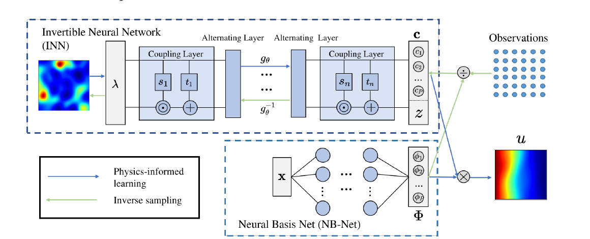
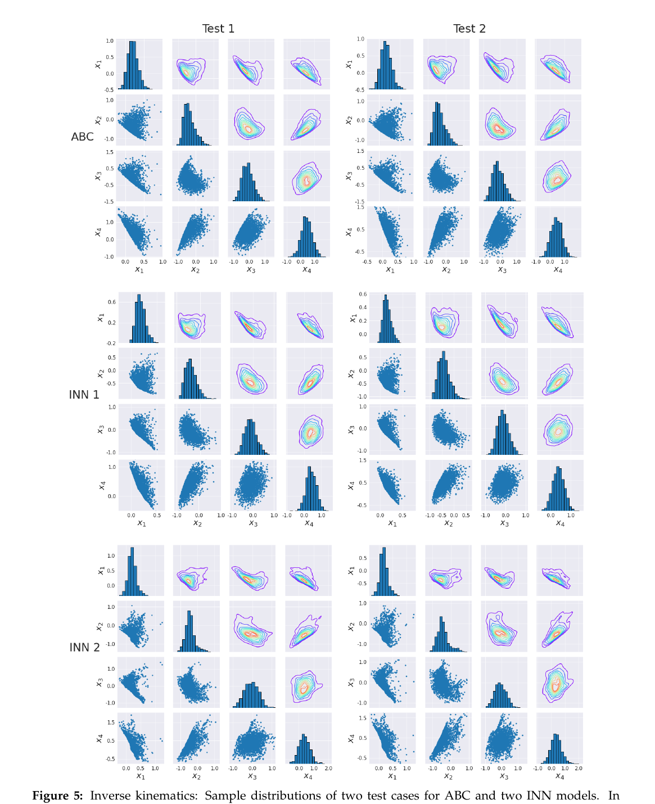

Reading · Bayesian Inverse Problems
PI-INN：同一个观测，为何对应多个解？
01. 逆问题首先是识别问题
论文从贝叶斯逆问题出发：参数 λ 经前向物理模型生成可观测量，目标是获得后验 p(λ | observation)。稀疏观测会丢失信息，使前向映射多对一；此时“最小误差参数”只是众多可行解之一。
逆运动学用四个输入变量控制二维末端坐标。维度已经说明一个末端点通常对应许多关节配置；不确定性不是优化失败，而是问题本身不可识别。
02. 可逆网络如何保存多解

模型通过可逆映射把参数变换为 (c, z)：c 连接观测与前向解，z 承载观测未识别的自由度。训练要求 z 服从标准高斯并与 c 独立；反演时固定由观测得到的 c，反复采样 z，即可生成一组后验参数样本。
03. 证据不是一个误差数字，而是联合分布

这张 pair plot 同时显示边际宽度、参数相关、弯曲可行域和多模态结构。作者以拒绝采样 ABC 作为参照：从先验采样，经前向模型计算，若输出与观测的 L2 距离小于 0.035 就接受，直至得到 2000 个样本。ABC 仍依赖先验、摘要和容差，因此应称为近似基准，而非无条件真值。
04. 哪些条件不能被图表掩盖
- 后验由先验、观测模型和前向机制共同定义；换先验可能换结论。
- 准确反演依赖前向解与基函数表示足够准确。
- c 与 z 的独立、z 的高斯性是关键训练假设。
- 无噪声例中似然难写，ABC 容差实际定义了“近似相同”的范围。
05. 接到 Meta：不要把一次最优校准当成识别
同一组收益厚尾、波动聚集和量价统计，可能由不同的代理比例、记忆长度、风险偏好、网络结构或冲击过程生成。Meta 的校准结果应同时报告参数边际后验、关键参数 pair plot、后验预测区间，以及多组可行机制在冲击场景中的分叉。
需要明确参数先验、五事实之间的距离权重、抽样误差、观测噪声和参考后验；否则“后验”只是在隐含假设下的可行配置集合。
06. 三分钟分享稿
PI-INN 最值得带回 Meta 的不是立即照搬网络，而是改变结果形式：校准是多对一逆问题，应返回一组带权机制解释，而不是一个最佳参数。论文用四维姿态到二维端点的例子把这一点讲得很直观，并用边际直方图、两两散点和密度展示完整后验几何。对于 Meta，下一步应先用 ABC/SBI 建立多解基线，再讨论可逆网络是否值得用于加速。